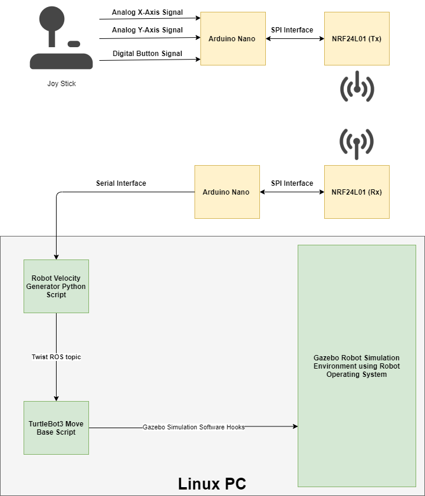

AES Encrypted Wireless Control of TurtleBot 3 Agent in Gazebo Environment
The goal of this project was to create a system to allow for secure wireless control of a TurtleBot3 agent within the physics-consistent Gazebo simulation environment. The chosen simulation environment was setup with a scale model of the third floor of the Kate Gleason College of Engineering (KGCOE) at RIT. An isomorphic view of this environment can be seen in the image below.

The TurtleBot3 agent move base controller subscribed to Twist messages containing linear and angular velocities generated from user input. This user input was collected from a simple JoyStick on a breakout board. The user input was then scaled and shifted appropriately, and encrypted using AES-128 on the TX side Arduino Nano. The encrypted data packet was transmitted using a pair of NRF23L01 modules to the Rx side Arduino Nano. At this point, the received data packet was decrypted and sent to the Linux PC running the Gazebo simulation environment via a serial interface. Here, a ROS node was used to receive the user input via the aforementioned serial interface, and generate and publish a Twist message for use by the TurtleBot3 move base node. A graphic depicting this described system can be seen below.
Each Arduino Nano initially started with the same static key stored in memory. It was desirable to implement a key rotation process that could be performed on the command of the user in order to prevent potential security issues. Once the key rotation process was started, a new AES key would be randomly generated on the Tx side Arduino Nano. This key would be encrypted with the old key, and transmitted to the Rx side Arduino Nano. Here, the new key was decrypted. If the newly generated key transmitted without error and decrypted, the old key on both the Tx and Rx side Arduino Nanos would be overwritten with the new key. The overall operation of the system (including the key rotation process) can be seen in the flowchart below.

System Functionality Demo
Overall, the implemented system worked as expected. A YouTube video depicting the aforementioned functions of the system can be seen below.